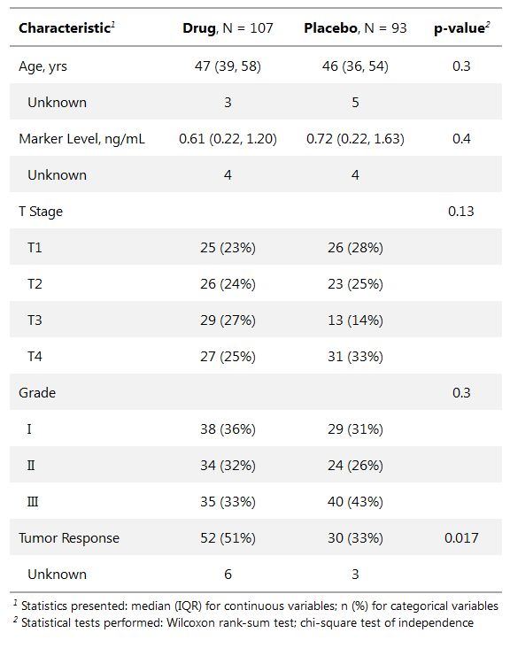
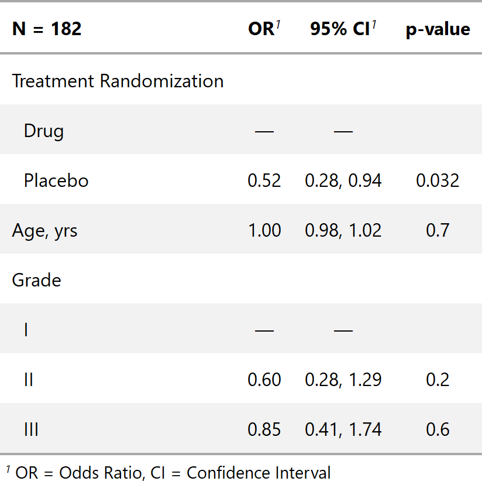

gtsummary
The {gtsummary} package creates presentation-ready tables summarizing data sets, regression models, and more. The code to create the tables is concise and highly customizable. The resulting tables are gorgeous! Data frames can be summarized with any function, e.g. mean(), median(), even user-written functions. Regression models are summarized and include the reference rows for categorical variables. Common regression models, such as logistic regression and Cox proportional hazards regression, are automatically identified and the tables are pre-filled with appropriate column headers (i.e. Odds Ratio, and Hazard Ratio). The package uses {broom} to perform initial tidying of the regression models, which means there is broad support for many types of regression models.
{gtsummary} uses the {gt} package enabling each table to be tailored to your preferences. If you label your data (which I recommend!), the labels will be used in the table output. With {gtsummary} and labelled data, you get a beautifully formatted, ready-to-share table in a single line of code! Check out the examples below, and review the vignettes for a detailed exploration of the output options.
Installation
You can install the production version of {gtsummary} with:
and the development version with:
Examples
The {gtsummary} vignettes/tutorials contain detailed examples.
Summary Table
library(gtsummary)
#> Loading required package: gt
t1 <-
tbl_summary(
data = trial[c("trt", "age", "grade", "response")],
by = "trt"
) %>%
add_comparison() 
Regression Models
mod1 <-
glm(response ~ trt + age + grade, trial, family = binomial(link = "logit"))
t2 <-
tbl_regression(mod1,
exponentiate = TRUE)
Please note that the {gtsummary} project is released with a Contributor Code of Conduct. By contributing to this project, you agree to abide by its terms. A big thank you to all contributors!
@ddsjoberg, @karissawhiting, and @michaelcurry1123